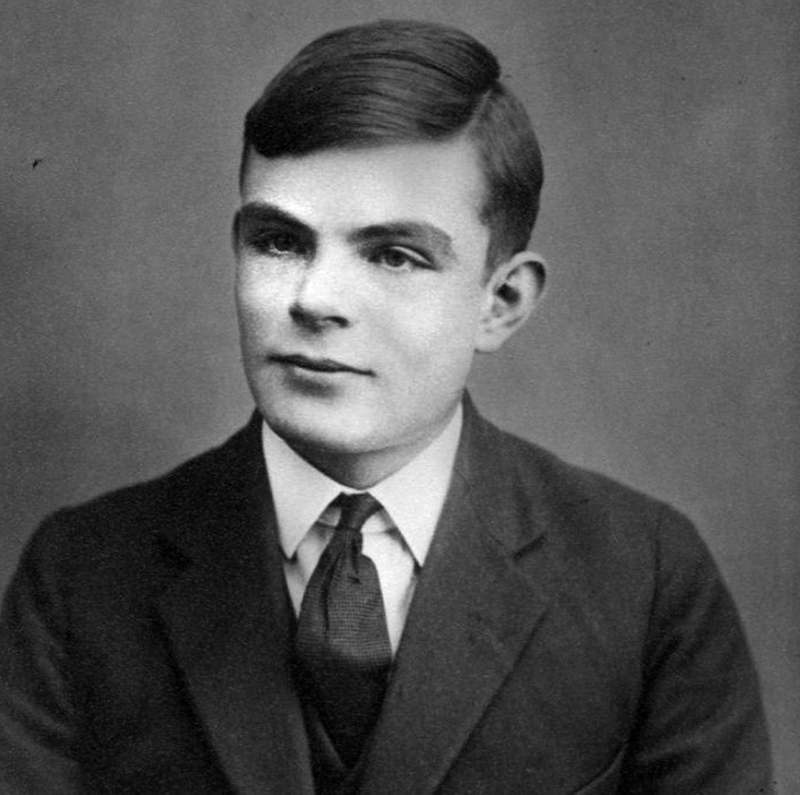
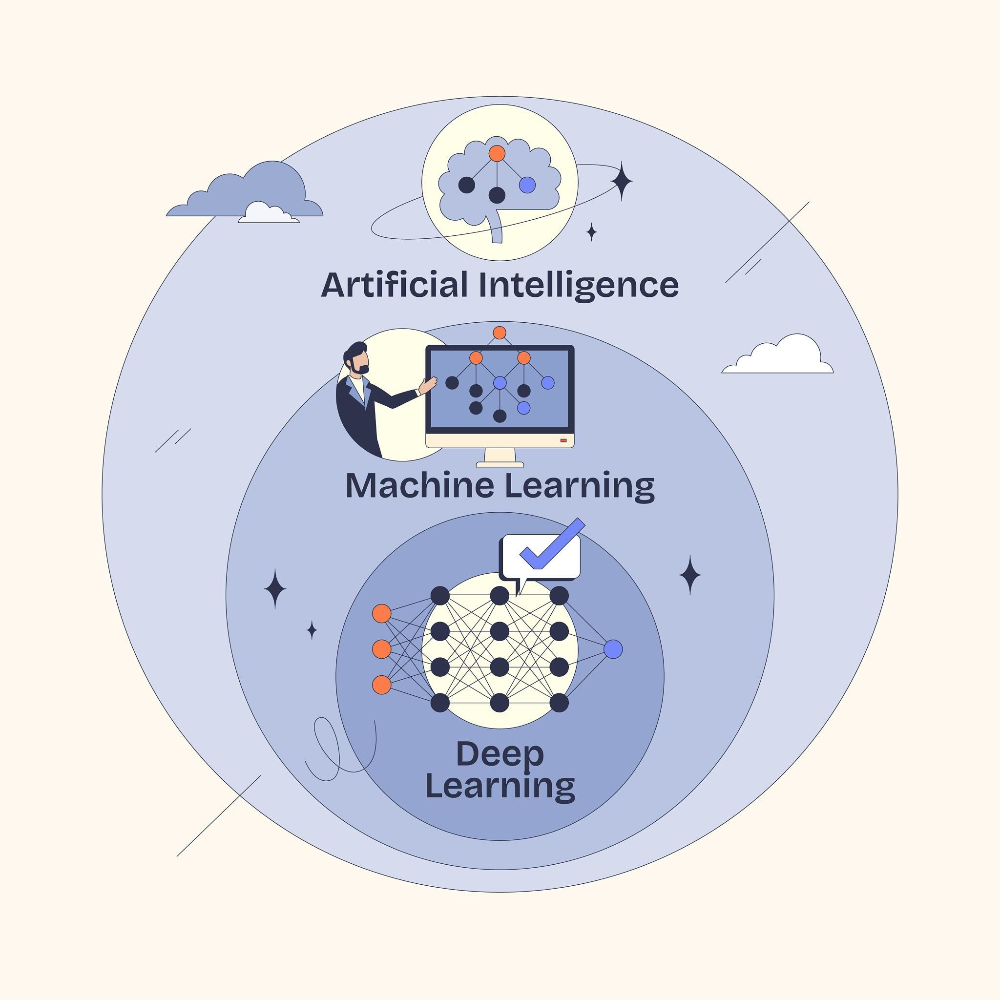

1. Los Orígenes de la IA
La Inteligencia Artificial (IA) nació formalmente en la década de 1950. Sin embargo, las ideas de máquinas capaces de pensar se remontan a la antigüedad con mitos y conceptos matemáticos básicos.
En 1950, el matemático británico Alan Turing publicó su famoso artículo "Computing Machinery and Intelligence", donde propuso la célebre "Prueba de Turing" para evaluar si una máquina podía exhibir un comportamiento inteligente.


2. Cronología Histórica
A continuación se resumen las etapas más importantes en el desarrollo de la IA:
0....| Año | Hito o Evento | Descripción |
|---|---|---|
| 1956 | Conferencia de Dartmouth | John McCarthy acuña por primera vez el término "Inteligencia Artificial". |
| 1966 | ELIZA | Creado por Joseph Weizenbaum, uno de los primeros procesadores de lenguaje natural. |
| 1997 | Deep Blue vs. Kasparov | La supercomputadora de IBM vence al campeón mundial de ajedrez Garry Kasparov. |
| 2012 | AlexNet | Demuestra la efectividad de las redes neuronales profundas (Deep Learning) en visión por computadora. |
| 2022-Presente | IA Generativa | Modelos de lenguaje masivo (LLM) como GPT popularizan la interacción en lenguaje natural. |
Sistema basado en reglas (Decada de 1970-1980).
¿Qué es? Programación tradicional estructurada bajo la lógica "Si ocurre X, haz Y" (If-Then). Un humano escribe manualmente cada instrucción y condición que el sistema debe seguir.
Cómo funciona: La computadora no "aprende" nada; solo ejecuta un manual de instrucciones explícito creado por expertos.
Ejemplo: Un corrector ortográfico básico que busca palabras en una lista predefinida o un sistema de diagnóstico médico rudimentario.
Límite: Si surge una situación no programada de antemano, el sistema colapsa. Es imposible redactar reglas para tareas complejas como reconocer un rostro o traducir lenguaje natural.
Aprendizaje Automático / Machine Learning (Década de 1990–2000) ¿Qué es? En lugar de programar las reglas, le das datos al sistema para que él descubra los patrones y cree sus propias reglas.
Cómo funciona: Utiliza algoritmos estadísticos (como árboles de decisión o regresiones). Un humano aún necesita estructurar los datos y decirle al algoritmo en qué características fijarse (por ejemplo: "mide el largo del ala y el peso para identificar el ave").
Ejemplo: El filtro de spam de tu correo electrónico que detecta qué mensajes son basura según palabras clave y patrones pasados.
Límite: Requiere mucho trabajo humano previo para preparar los datos y no escala bien con información no estructurada (imágenes, audio, texto libre).
Aprendizaje Profundo / Deep Learning (Década de 2010) ¿Qué es? Una evolución del Machine Learning inspirada en la estructura del cerebro humano, basada en redes neuronales artificiales profundas (con muchas capas de procesamiento).
Cómo funciona: No necesita que un humano le diga en qué detalles fijarse. Si le das millones de fotos de gatos, la red neuronal aprende por sí sola a identificar bordes, formas, texturas y, finalmente, el concepto de "gato".
Ejemplo: Reconocimiento facial para desbloquear el teléfono, conducción autónoma (Tesla) o detección de tumores en radiografías.
Límite: Consume enormes cantidades de energía y datos, y funciona como una "caja negra" (es difícil rastrear exactamente cómo llegó a una conclusión).

4. Áreas y Subcampos de la IA
La IA no es una única tecnología, sino un conjunto de disciplinas interconectadas:
- Procesamiento del Lenguaje Natural (PLN): Permite a las máquinas entender e interpretar el lenguaje humano.
- Visión por Computadora: Capacita a los sistemas para extraer información a partir de imágenes y videos.
- Robótica: Combinación de hardware e IA para interactuar físicamente con el entorno.
- Sistemas Expertos: Emulan la capacidad de toma de decisiones de un experto humano en áreas específicas como la medicina o la geología.